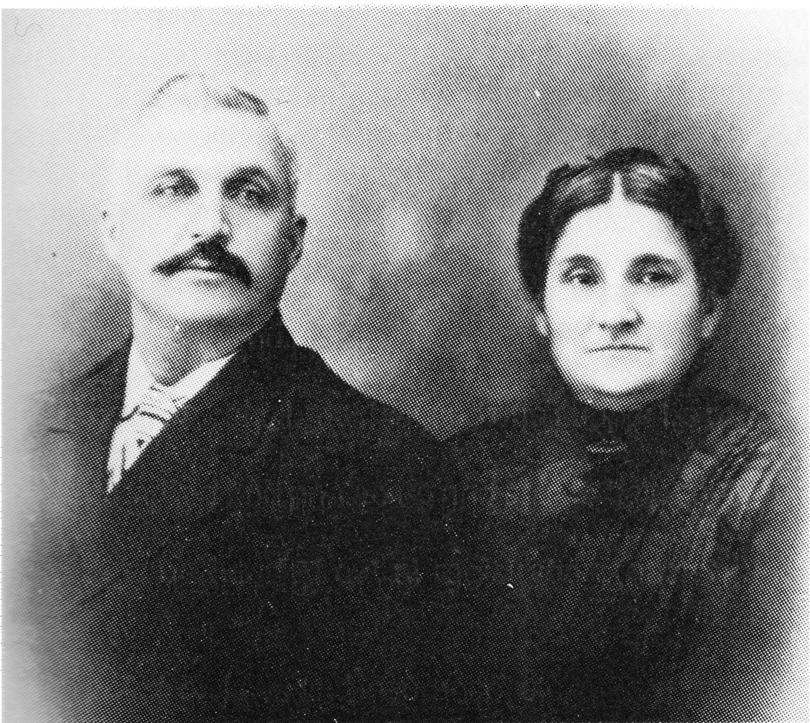

Moïse and Sophie
The First Generation
Moise was born in 1858 at Chateau Richer, Quebec.
In 1877, when times were very hard, Moise, at the age of 19, like many other Frenchmen left to go west for "better pastures". However, before leaving, Moise promised his girlfriend, Sophie Pichette, that he would return and marry her.
The journey west began using boat, then train as means of transportation with Winnipeg being the end of the railroad line. "The ride was over" and the journey continued on foot along survery lines, with very little to eat along the way. On his journey westward, Moise worked at sawmills and later on the railroad which was being extended up to the Rockies and the Crows Nest Pass. Many tales of hardship were told of that time.
In time, Moise earned enough money and kept his promise to Sophie. He returned to Chateau Richer where they were married in January, 1881, after which the bride and groom left Quebec for the west.

about 1910
They travelled as far as Winnipeg where Moise got work and they settled for awhile. The eldest children, Alma and Arthur, were born during this time.
Moise seemed to have his sights set on the Battleford area, so the family moved westward again. At the time of Moise's arrival in Battleford, the 1885 rebellion was in progress. Moise attempted to make entry into Fort Battleford but was refused because he had a family. He was told to go to Moose Jaw; however, he chose to travel by wagon to the Rockies. Leonidas was born when they reached the mountains.
When news reached Moise that the rebellion was over, he moved his family back to Battleford. The following is a description of one of the frontier experiences the L'Heureux family encountered on their journey.
Once, when the family was camped and settled for the night, their horses were stolen, leaving the family stranded. Moise had to part with his gold watch in trade for an Indian pony. Next, he set out to look for his stolen draft horses. During his search, Moise met a couple of freighters who told him to forget about his horses because horse thieves operating across the U.S. border had probably stolen them. Moise really had a problem, so he bartered for another pony and returned to his wagon where the family was waiting. The L'Heureux's then made the rest of the journey to Battleford. They reached their destination in 1886, the same year that Josephine was born.
While Moise was in Battleford, he worked as a bartender at the hotel. In later years, he operated a stopping place, complete with a license to make and sell beer.
In 1887, Moise obtained a homestead in the Jackfish area and the family moved once more. In that year, they not only moved, but also had a new son, Paul.
The land in the Jackfish Lake area in 1887 was a hunting and fishing paradise. Now that the rebellion was over, hard working pioneers wasted no time in coming to the district. All the pioneers needs were available with honest hard work. Moise made his homestead on the N.E. 1/4 of Sec. 22; home was on a side hill on the north side of Jackfish Creek. One side of the farm bordered the Indian Reservation on which the natives had been placed after the rebellion had ended. The L'Heureux's always got along well with the Indians and supplied them with one sheep and one steer during their yearly Rain Dance.
More pioneers became neighbors to the west and north, such as the Neault, Bellavance, Poitras, Landry, Duhaime, Cote, Bellanger, Nap, Gagne, Couture, Savard and Bourer families. Many settlers followed as time passed.
Homes were built of logs which were plastered with white mud clay. All building supplies were naturally found nearby. Some homes had wood floors, others had only packed dirt as flooring; furniture was scarce and often hand made. Many pioneers used sod to roof their homes.
The pioneers raised sheep and cattle. A few acres of land were broken for grain crops and gardens. Haying was done by hand with scyths and forks. Later, modernization came with the use of mowers pulled by oxen. Moise owned seven such teams at one time. Gradually more modernization occurred; slow moving oxen were replaced with horses.
George was born in 1891, and the following year, Joseph was born. Education was becoming a need for the growing family. The area had no school, so Moise again moved his family, this time to Delmas. Now the L'Heureux children could be educated the Convent, run by the Sisters of the Assumption. By 1894, the L'Heureux family had increased by three. The twins, Mathilda and Marie-Louise were born in 1893 and RoseAnna was born in 1894.
That year, St. Michael's School, named after one of the pioneers, Michael Cote, was built in the Jackfish area. The L'Heureux family returned to the area from Delmas--school was available at home now. In 1895, Mrs. Josephine Heon opened the doors of the school for the first time. The first teachers were called voluntary teachers, as they were not paid for their services. Many stayed for only one term. Miss Pinsonneault and Mr. Paree followed Mrs. Heon.
In the wintertime, the first pupil to arrive would be responsible for lighting the fire and hauling drinking water from the creek. In the summertime nearly all came to school barefoot. The first one to come to school unshod in the spring was considered quite a hero by the other pupils, at least, if not by his mother if she found out!
It is interesting to note that one mile S.W. (and across the creek from the school) the Northwest Mounted Police established a post in 1894 which operated until 1909 when it was abandoned. Prior to this time, winter patrols occured only a few times in the season. This building can be seen at the Western Development Museum today where is is preserved in their village.
In 1896, Antoinette was born. However, in 1897, the school was closed due to a shortage of teachers and Moise moved his family once more to Delmas so the children could receive their schooling. Again in 1898, the family increased with Emilie being the newest member. Moise soon became Indian agent for the Thunderchild and Moosomin Reserves from 1901-1905. The last three children were born during their stay in Delmas, namely Wilfred, Pierre and Antonio.
Another move was coming, this time back to Jackfish for good. Teachers were now available for the school in the area. Miss Paquette, Mr. and Mrs. Briere, Tom Duhaime, Miss Lena Arsenault, Mrs. Emilienne L'Heureux, Marguerite Poulen and Miss Monette were, over a period of years, the teachers on staff.
Moving back and forth must have been difficult for the family, particularly for Sophie. She must have been a courageous and a patient woman to be cooking and tending to her family's need in many less than inviting situations. For example, every time they crossed the North Saskatchewan River, they had to swim their horses and cattle across the river using a row boat and raft. To cross the river
with a buggy, wheels had to be removed to be transported separately. In all this activity, Sophie must have had many an anxious moment tending to the safety of her large family. Once the opposite shore of the river was reached and camp was made, Sophie no doubt made the evening meal, perhaps washed clothes, or even tended a sick child, not to menton doing battle with mosquitoes and black flies.
The journey continued. The Pichette home, located a mile east of Moise's homestead, was vacant upon their return, so Moise and Sophie moved into it and it has been known since as the "old place". It consisted of a two story house by a small creek, where the cattle wintered. There was also a room for the priest to say Mass. This location also served as a post office and stopping place.
Around 1910, another home was erected to the west of the old place. It was a log framed two story structure. The first floor had a large kitchen, dining room and sitting room. The upstairs had six large bedrooms. One room was kept for sewing, knitting and spinning wool. That was the room in which Grandmother used to knit until she passed away in 1944.
The basement had a dirt floor with a large furnace for central heating. Heat was provided by burning large blocks of wood - many of them! They had all their family with them in this house - 8 boys and 7 girls. All these children were born at home with the help of a midwife. Moise and Sophie also raised two grandchildren (Alice and Alma) after their mother (Leonidas' first wife) died.
In later years, lumber was hauled from North Battleford with horses; the house was then completed inside and out.
This house felt the joy of many a celebration in the large dining room and sitting room. The yearly "everyone welcome" was one such occasion. New Years Day was a feast to behold with Grandmother Sophie working extra hard to provide good food and tasty treats for young and old. The host always had on hand a 45 gallon closed wooden barrel full of beer.
It would be an injustice not to provide the reader with Moise and Sophie's famous home made beer recipe.
FOR 10 GALLONS
10 pounds of barley
8 pounds of brown sugar
1 pound hops
1 yeast cake
METHOD
Roast baley in oven until brown; then boil barley with hops in a bag or loose in a container. When cooked, about 2 hours, strain into a closed barrel. Reserve 1/4 pound of sugar and add remaining to the barrel. Melt the reserved sugar and cook until deep brown, then add it to the liquid in the barrel. The browned sugar gives the beer colour and taste. Add enough water to the barrel to make 10 gallons.
THE YEAST
1 yeast cake
2 teaspoons sugar
4 cups water
2 cups flour
When the water in the barrel is lukewarm, add yeast mixture. Keep barrel in room temperature of about 65 degrees F until matured. It can be drank from the barrel or bottled.
Life progressed in the area. A hotel was built 1/2 mile north of the school. It was used by teachers, freighters and trappers.
In 1900, Mr. Pomerleau had built a cheese factory and Hudson Bay store 1 1/2 miles N.W. of the school. Pioneers transported milk in 10 gallon cans to be made into cheese.
For the first few years, there was no church. On occasion, a missionary from Battleford came to say Mass, baptise babies, perform weddings or conduct funerals at pioneer homes.
In 1890-1892, a chapel was built by Father Leon Bondoux on the west side of the creek, 2 mile N.W. of the school. When Father Bondoux left, he was replaced by Fathers Begonaise and Pascal. In 1904, the church was moved to the Ness place by the lake, (Bru's Point). It was then called the Parish of St. Leon.
Life in the early days was much different than it is today. Cattle roamed at large, causing hot arguments as to who owned certain cattle.
Moise also raised sheep - at times up to 400 head. Once during a snow storm, 40 head of sheep became lost. Joe and George, with supplies and horses, had orders to find them. In their search, they found that the sheep had been driven further away than had been expected during the storm. They continued to search, finding only skeletons, thus being forced to return home empty handed. During the following autumn, three surviving sheep returned home!
Hay was very necessary if livestock was to survive the harsh prairie winters. It was cut with a scythe and loaded by fork on to a hay rack. In later years, mowers pulled by oxen or horses did the cutting. It was raked and loaded by pitch fork, transported and unloaded by pitch fork into stacks. Some farmers started using ropes to unload and pull the hay onto stacks.
Later, the bull rake was invented. It consisted of a 12 foot log with wooden teeth on one side and with a team at each end pulling it to pick up the hay. When it was full, it was hauled to the stacker to be pulled onto the stack. A man remained on top to form the stack. This method saved labour and was much faster. This type of stacking was again modernized by having wheels on the sweeps and cable on the stacker. An extra team was used to pull the load to the top of the stack.
As the years went by, the children got married and moved away. Only Antoine, the youngest, remained at home.
In 1921, Moise bought a Chev 4 door car; however, he was unable to drive so Wilfred, one of his sons, did the driving for him. The next vehicle was a McLaughen four door which was replaced by another Chev in 1926. By that time Antoine was married, so his wife, Delima, who could drive, carried out the chauffering duties.
At the age of 73, during the winter, Moise developed stomach trouble and passed away on February 16, 1931.
So it was that in the year 1931, the ranch was sold to the fourth son of the second generation, George. Sophie remained in the house with George and his family. She went into the hospital for the first time in her life the year before her death. She died March 13, 1944.
George had four sons and a daughter. I, Marcel, was the oldest.
At that time, purchase of a ranch was an expensive undertaking. There were nineteen quarters of land, many cattle and one hundred horses. The horses were on open range...wild and unbroken. The range covered ten miles, which gave us lots of riding before we could corral all the horses. Once they were corralled, they had to be lassoed, halter broke, harness broke and some broke for riding. Among the lot of horses, we had registered Percheron stallions and mares.
Every summer, one hired hand and I had to bring two stallions as "travelling studs". This went on for six days a week for a period of two months. We travelled as far as fifteen miles from home. We stopped at farms to check the mares in order to have them bred. Our studs could breed three and sometimes four mares a day.
Field work was done with four horses on a drill, six horses on a two furrow plow or disc. That meant we had about sixteen horses for two drivers. To feed our animals, we used hay which we pitched in the loft in winter and fed a ration of oats at 5:00 a.m. After this was done, the horses were watered, next they harnessed and aready to work from 8-12 noon. At noon, the horses were fed and watered again. Work began at 1:00 p.m. and usually ended around 6:00 p.m.
Tending horses was not the only chore; there were cows to milk and chickens and pigs to be fed.
During the summer, in July, if it was dry before the changing of the moon my father was glad, as it meant a few dry weeks. Our haying machinery was overhauled and ready to go, and go we did! We started with four mowers, then we changed teams to rest them halfway through the day. After a few days, 8 more men began raking and stacking.
Then harvest came. We used binders to cut the crop; then we stooked it by hand to dry. We threshed our crops and the neighbors' crops. When this was done, we hauled the grain to the elevator using teams and sixty bushel wagons. The haul was eight to ten miles. When the snows came, we would use sleighs.
Next, it took six men to bail the hay, and four more men to haul it. We crossed the frozen lake for ten miles to the railroad where we loaded the hay into box cars. Every box car had to be loaded in two days or we were charged a standing fee.
My mother would make a big pot of pork and beans and sandwiches for dinner. We would eat in the granary and rest men at the thresher.
In 1937, I married and moved into my father's old house.
In 1939, World War II broke out; my brothers, Henry and Gaston, enlisted in the army. We were fortunate that both brothers returned safely from the war.
In May, 1946, my father, George, was walking on King Street in North Battleford. Tragedy struck! At the age of 55, he suffered a stroke from which he never recovered. He was bedridden for the remaining 32 years of his life. My brother, Henri, and his wife looked after him for many years. Later he lived in a nursing home until he passed away November 15, 1978 at the age of 87.
The ranch was then rented for three years. After that time, Henri decided to buy it.
So it was that Henri, of the third generation bought the ranch in the year 1952. He also worked hard, long days still using only horses for power. He had a family of six boys and three girls. With time he got help from his boys, slowly modernizing his machinery while still managing to make ends meet. More land was added to the ranch until it became the twenty-six quarter ranch it is today. Up until this time, there had been no electricity on the farm, until in the year 1956, Henri got the Hydro to install power. The telephone was installed around the year 1960.
In 1972, he rented the ranch to two of his boys (Gilbert & George), being able to semi-retire.
Gilbert has three girls. George has two boys and one girl.
So it was that Gilbert and George, of the fourth generation bought the ranch in the year 1981. They have also modernized their machinery to the extent that two men do all the work with no hired help.
Being the new owners, they have agreed to supply and get 12 acres seeded in grass and ready to be used to celebrate in 1987, 100 years of L'Heureux ownership of the original property, making it a Centennial Celebration.
For the descendants information, as of today, July 10, 1986, all of Moise's children have passed away, except one of the twin girls, Mathilda, born in 1893. She now resides at Chilawack in a nursing home, being 93 years old.
Following is information as to where our ancestors are all resting in peace.
Moise, Sophie, Arthur, Leonidas, George, Emilie, Marie Louise, Joseph, and Pierre are all buried at the Jackfish St. Leon Cemetary; Josephine is at Sapperton (New Westminister); Roseanna and Antoinette at St. Paul, Alberta; Alma at Hudson Bay; Antoine at Delisle; Wilfred at Peace River, Alberta, and Paul at Edmonton, Alberta.
This is the year 1986 and the end of what I was able to search and put into words of a one hundred year progress which finished an era, that which reflected the term, "The Grass and Wood" having been replaced by "The Iron and Wood" to what we have now. Now we have power, speed and comfort with air conditioned tractors, air travel, test tube babies, all governed by computers.
But who cares? We now have power, speed and comfort with air conditioned tractors, air travel, test tube babies, all governed by computers.
Not knowing all of what the truth may be
I have told some of it as it was told to me,
Completing an ecology book
of Moise and Sophie's Descendants
noting that the size of families
Have been getting smaller as time goes along
And finding a total number of living of: 1763
And a total number of deceased of: 97